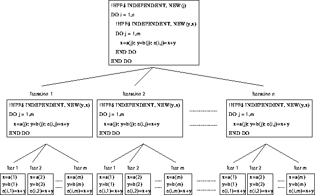

Next: New Variables Example 2
Up: Data Parallel Execution
Previous: New Variables Example 1

For more information, click here

Now try this question
Next: New Variables Example 2
Up: Data Parallel Execution
Previous: New Variables Example 1
Adam Marshall ©University of Liverpool, 1996
Tue Nov 26 19:51:50 GMT 1996